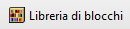
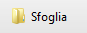
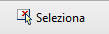

Steccato
Dove posso trovare questo comando?
laSteccato
Icona:
Clic con il tasto sinistro del mouse su

Gli steccati sono elementi usati per suddividere un giardino o un parco in vari settori destinati a usi diversi.
Gli steccati vengono definiti dalla combinazione di tre componenti che possono essere aggiunti o eliminati in qualsiasi momento: pali, balaustri e traverse.
Inserire uno steccato:
Dopo aver eseguito il comando laSteccato, appare la finestra di dialogo relativa allo steccato. Questa finestra mostra le opzioni di base dell'oggetto steccato in due pannelli.
- Steccato: parametri dello steccato.
- Palo: parametri del componente palo.
- Balustri: parametri del componente balaustri.
- Materiale: impostazioni del materiale per l'oggetto steccato.
Procedimento:
- Selezionare i parametri dello steccato. Fare clic su OK per chiudere la finestra di dialogo.
- Selezionare una curva esistente nel modello per definire il percorso dello steccato o selezionare un'altra opzione sulla linea di comando.
- Polilinea: lo steccato viene creato come se fosse stata disegnata una polilinea.
- Spline: lo steccato viene creato come se fosse stata disegnata una spline.
- Cerchio: lo steccato viene creato come se fosse stato disegnato un cerchio. Il primo clic stabilisce il centro del cerchi mentre il secondo il raggio.
- Arco: lo steccato viene creato come se fosse stato disegnato un arco. Il primo clic stabilisce il punto di inserimento, il secondo stabilisce un punto intermedio nell'arco e il terzo clic specifica il punto di fine dell'arco.
- Rettangolo: lo steccato viene creato come se fosse stato disegnato un rettangolo. Il primo clic stabilisce un angolo del rettangolo e il secondo l'angolo opposto.
- Premere Invio o Esc oppure dare clic con il tasto destro del mouse per terminare il comando.
Lands userà il numero di pali e balaustri necessario lungo tutto l'asse dello steccato, rispettando, nei limiti del possibile, i parametri di separazione e quantità descritti sopra.
Nota: per costruire uno steccato, non sempre occorre usare tutti e tre i componenti contemporaneamente. Tuttavia, gli unici elementi che non possono essere tralasciati contemporaneamente sono i pali e i balaustri.

Finestra di dialogo di inserimento per lo steccato.
Punti di controllo 
L'oggetto steccato presenta gli stessi punti di controllo delle curve usate per crearli.
Inoltre, presenta una freccia di controllo dello spostamento per spostare l'intero oggetto.
I punti di controllo dello steccato vengono attivati automaticamente durante la selezione individuale degli steccati. Per attivare uno o più punti di controllo dell'oggetto steccato, basta selezionare gli steccati ed eseguire il comando PuntiOn o premere il tasto F10. Per disattivare i punti dell'oggetto steccato, premere il tasto ESC o eseguire il comando PuntiOff.
Opzioni e parametri di inserimento
Le opzioni e i parametri relativi all'inserimento dell'oggetto steccato vengono divisi in vari pannelli e sono disponibili da diverse finestre di dialogo:
Generali
Attributi generali per l'oggetto steccato: Nome, Colore, livello, Codice e Parola chiave.
Steccato
Questo pannello consente di modificare i parametri generali dei componenti dello steccato: pali, balaustri e traverse.
- Pali: si tratta dei principali componenti verticali di uno steccato. Sono posizionati nei punti di inizio e fine della curva di percorso dello steccato e sui punti di discontinuità intermedi. I pali possono essere distribuiti in due modi:
- Distanza tra i pali: la distanza tra i pali quando non esistono punti di discontinuità intermedi. Questo parametro riguarda il parametro di quantità di balaustri, che viene calcolato automaticamente.
- Per quantità di balaustri: la distanza tra i pali viene stabilita in base all'impostazione sulla quantità di balaustri. Questa opzione è disponibile solo se il componente balaustro è attivo.
- Balaustri: elementi verticali tra i pali dello steccato.
- Separazione: intervallo tra i balaustri quando non esistono punti di discontinuità intermedi.
- Quantità: numeri di balaustri tra due pali. Questo numero potrebbe non essere effettivo nell'ultima parte dello steccato o nei segmenti dello steccato troppo corti.
- Elevazione: distanza tra il bordo inferiore dei balaustri e la curva di percorso dello steccato. L'opzione centrato centra i balaustri in verticale, prendendo l'altezza del palo come valore di riferimento.
- Traverse: elementi dello steccato orizzontali che seguono la curva di percorso dello staccato.
- Profilo: diversamente da pali e balaustri, le traverse possono avere solo un profilo rettangolare.
- Quantità: numero di elementi del binario nello steccato.
- Separazione: distanza tra le traverse. L'opzione
Distribuiti equamente imposta una distanza di separazione uguale tra gli elementi del binario.
- Elevazione: la distanza tra l'elemento del binario più basso e la curva di percorso dello steccato. L'opzione Centrato centra le traverse in verticale, prendendo l'altezza del palo come valore di riferimento.
- Allineamento: la posizione delle traverse (sinistra, centro, destra) in base al componente palo e balaustro.
Palo
Questo pannello appare quando il componente palo è attivo sul pannello Steccato. È possibile definire i seguenti parametri:
- Selezione oggetto: è possibile selezionare la geometria per il palo in diversi modi.
-  Un blocco dalla libreria dei blocchi.
-  Un file dal computer
-  Un oggetto esistente nel modello.
- Quote: le quote del palo vengono calcolate automaticamente dalla geometria selezionata (in base alle quote del parallelepipedo limite). Tali quote possono essere modificate e l'oggetto verrà scalato di conseguenza.
- Scala uniforme: questa opzione modifica automaticamente le quote del palo durante la modifica di qualsiasi valore, in modo da conservare le proporzioni del componente.
Balaustro
Questo pannello appare quando il componente Balaustro è attivo sul pannello Steccato. È possibile definire i seguenti parametri:
- Selezione oggetto: è possibile selezionare la geometria per il Balaustro in diversi modi.
- Un blocco dalla libreria dei blocchi.
- Un file dal computer
- Un oggetto esistente nel modello.
- Quote: le quote del balaustro vengono calcolate automaticamente dalla geometria selezionata (in base alle quote del parallelepipedo limite). Tali quote possono essere modificate e l'oggetto verrà scalato di conseguenza.
- Scala uniforme: questa opzione modifica automaticamente le quote del balaustro durante la modifica di qualsiasi valore, in modo da conservare le proporzioni del componente.
Materiale
Questo pannello consente di cambiare l'immagine della texture assegnato a questo elemento e definirne le dimensioni, la riflettività e la trasparenza.
Pali e balaustri assumono il materiale dello steccato se il materiale delle parti costituenti è assegnato per genitore.
Opzioni di modifica
Esistono opzioni di modifica per l'oggetto Steccato, disponibili nell'area di modifica del pannello di modifica.
Visualizzazione grafica dello steccato
L'oggetto steccato offre rappresentazioni 2D e 3D simultanee sul modello.